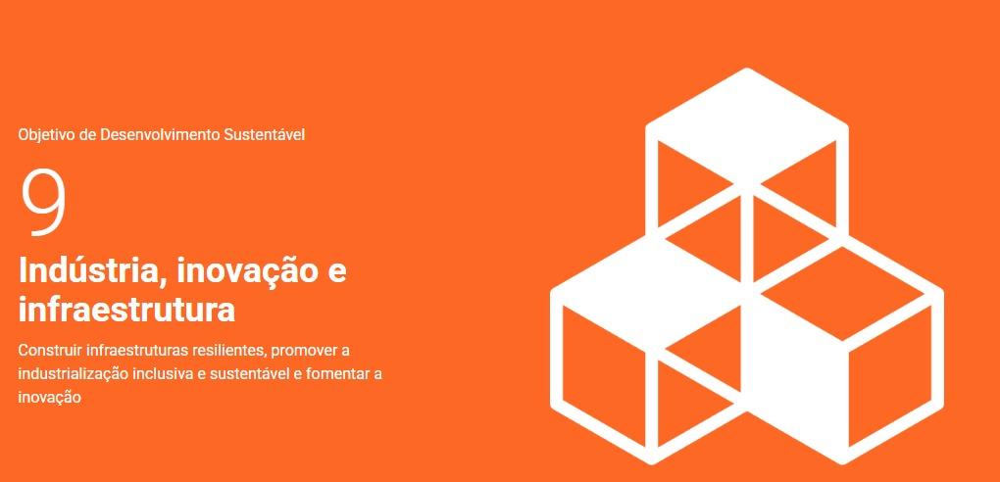

Graduanda do quarto período de Engenharia de Software na Universidade Tecnológica Federal do Paraná, com sólida base acadêmica e grande interesse em Inteligência Artificial. Proativa, detalhista e ávida por aprendizado, busca aplicar conhecimentos em projetos desafiadores e contribuir com soluções inovadoras no mercado de IA.
ODS que pretendo contribuir

Por meio do desenvolvimento de tecnologias eficientes, escaláveis e acessíveis, ao adotar práticas sustentáveis no ciclo de vida do software, incentivar o uso ético e responsável da tecnologia e atuar como um agente de inovação que impulsiona o desenvolvimento econômico sustentável e a inclusão digital.
Habilidades
Programação em C (avançado)
Programação em Java (intermediário)
Programação em Javascript (intermediário)
Programação em Python (intermediário)
Desenvolvimento de banco de dados SQL
Educação
Universidade Tecnológica Federal do Paraná, Cornélio Procópio